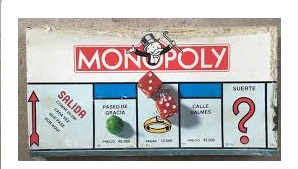

Ahora
Con los años la finalidad del juego cambio para solo disfrutar de un buen rato,negociando propiedades y hasta haciendo uso de medios electronicos para todas las transacciones qu requiere el juego.

Un juego creado con la funcion de servir como herramienta para enseñar las teorias acerca de la justicia social y economica estraidas del estudio titulado Prograso y Miseria de Henry George
Comercializado por primera vez en el año de 1936.
A lo largo de 80 años, el juego a sufrido una notable evolución. Sus múliples ediciones y sus tantas versiones han dado pie a que se cambiara desde la caja que lo contiene hasta los elementos que lo componen. Logrando así, mantenerse como el favorito a través de las decadas.
Con los años la finalidad del juego cambio para solo disfrutar de un buen rato,negociando propiedades y hasta haciendo uso de medios electronicos para todas las transacciones qu requiere el juego.